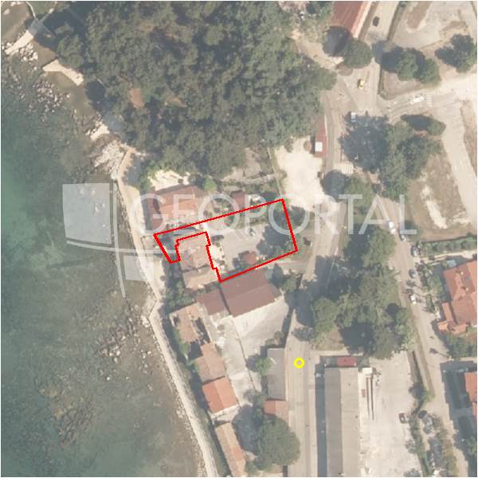

#40668 · POREČ, GRAĐEVINSKO ZEMLJIŠTE U MIRNOM OKRUŽENJU BLIZU MORA
Poreč, Poreč, Istarska · zemljiste · njuskalo · status active · oglas ↗
Ocjena
- Score
- 67 rule 67 · LLM – · 12.09.2026.
- RLV
- 916.000 € (931 €/m²) · ratio 5,69
- Ukupna investicija
- 2,35 M€
- GBP
- 885 m²
- Feedback
- –
- CRM
- –
Oglas
- Cijena
- 161.000 € (160 €/m²)
- Površina
- 1.006 m² · DKP 984 m² (odstupanje -2,2 %)
- Prodavatelj
- agencija · SPATIUM nekretnine
- Prvi put
- 11.09.2026. · zadnje 11.09.2026. · 0 d na tržištu
Povijest cijene
| Datum | Cijena |
|---|---|
| 11.09.2026. | 161.000 € |
Flagovi
zop_70_100 ZOP pojas 70/100 m (−10)zona_iz_oglasa zona preuzeta iz teksta oglasa (bez GIS-a)
llm_pending LLM ekstrakcija/ocjena nedostupna
Komponente score-a
| rlv | {'gbp': 885.3480000000001, 'kis': 0.9, 'nkp': 664.0110000000001, 'noi': None, 'rlv': 916046.4795652179, 'ratio': 5.689729686740484, 'value': None, 'phases': 1, 'profile': 'obala_visestambeno', 'gdv_neto': 3718461.6000000006, 'cost_soft': 88534.80000000002, 'gdv_bruto': 4648077.000000001, 'kis_known': True, 'total_inv': 2348616.08, 'cost_build': 1770696.0000000002, 'cost_other': 318725.28, 'cost_sales': 139442.31000000003, 'demolition': False, 'gbp_source': 'kis', 'rlv_per_m2': 931.2065217391308, 'parcel_area': 983.72, 'parcelation': False, 'roi_on_cost': 0.5238843506512993, 'profit_at_ask': 1230403.2100000002, 'cost_demolition': 0.0, 'total_inv_phase': 2348616.08, 'parcel_area_effective': 983.72, 'sale_price_per_m2_nkp': 7000.0} |
| hard | [] |
| info | ['zona_iz_oglasa', 'llm_pending'] |
| rubric | {'permits': {'max': 5.0, 'detail': {'permit': 'none'}, 'points': 0.0}, 'location': {'max': 15.0, 'detail': {'source': 'rlv.yaml:istra_zapad/row1', 'sale_price_per_m2_nkp': 7000.0}, 'points': 15.0}, 'physical': {'max': 4.0, 'detail': {'slope_pct': 6.9, 'slope_points': 2.0, 'sea_row1_bonus': True}, 'points': 3.0}, 'liquidity': {'max': 3.0, 'detail': {'n_cuts': 0, 'points_cut': 0.0, 'points_days': 0.008333333333333333, 'seller_type': 'agencija', 'points_fresh': 0.5, 'price_cut_pct': None, 'days_on_market': 1, 'points_private': 0}, 'points': 0.51}, 'rlv_ratio': {'max': 25.0, 'detail': {'rlv': 916046, 'ratio': 5.69, 'asking_price': 161000.0}, 'points': 25.0}, 'ticket_fit': {'max': 10.0, 'detail': {'asking_price': 161000.0}, 'points': 4.29}, 'zone_quality': {'max': 8.0, 'detail': {'source': 'oglas', 'zone_class': 'stambeno', 'zone_ideal': True}, 'points': 3.0}, 'profit_potential': {'max': 20.0, 'detail': {'roi_on_cost': 0.524, 'profit_at_ask': 1230403}, 'points': 20.0}, 'price_vs_benchmark': {'max': 10.0, 'detail': {'source': 'auto:Poreč', 'deviation': 0.08, 'ask_eur_m2': 160, 'benchmark_eur_m2': 173.89}, 'points': 6.19}} |
| weights | {'llm': 0.4, 'rule': 0.6, 'model': 0.0} |
| penalties | {'zop_70_100': 10} |
| raw_score | 77,0 |
| rlv_notes | [] |
| flag_notes | {'max_gbp': 885, 'zop_band': '70', 'total_inv': 2348616, 'zone_code': 'S', 'zone_class': 'stambeno', 'zone_source': 'oglas'} |
| caps_applied | [] |
GIS
- Čestica
- k.o. 323748, k.č. 3855 (pin_buffer, 0,79); k.o. 323748, k.č. 3836 (pin_buffer, 0,76); k.o. 323748, k.č. 3840 (pin_buffer, 0,63)
- Zona
- S (–)
- kig / kis / katnost
- – / – / –
- GP / UPU
- – · UPU –
- Pristup / nagib
- unknown · 6,9 % (max 15,1 %)
- More
- 10 m · red 1 · ZOP 70
- Zaštite
- Natura ne · zaštićeno ne · kulturno dobro ne
- Zgrade na čestici
- 1 %
- Match
- 0,79
Karta
Ortofoto (DOF)

RLV kalkulacija — pretpostavke
| gbp | {'value': 885.3480000000001, 'source': 'kis'} |
| kis | {'value': 0.9, 'source': 'oglas'} |
| sea_row | {'value': '1', 'source': 'gis'} |
| soft_pct | {'value': 0.05, 'source': 'profil'} |
| nkp_ratio | {'value': 0.75, 'source': 'profil'} |
| cost_other | {'value': 318725.28, 'source': 'profil: doprinosi+uređenje po m² GBP, financiranje+rezerva % gradnje'} |
| parcel_area | {'value': 983.72, 'source': 'dkp'} |
| asking_price | {'value': 161000.0, 'source': 'oglas'} |
| margin_on_cost | {'value': 0.15, 'source': 'profil'} |
| build_cost_per_m2_gbp | {'value': 2000.0, 'source': 'profil'} |
| sale_price_per_m2_nkp | {'value': 7000.0, 'source': 'rlv.yaml:istra_zapad/row1'} |
| transfer_tax_and_acquisition | {'value': 0.06, 'source': 'profil'} |
Ekstrakcija iz oglasa
| kig_claim | 0.3 |
| kis_claim | 0.9 |
| utilities | ['struja', 'voda'] |
| zone_claim | S |
| access_road | yes |
| floors_claim | P+1 |
Benchmarks mikrolokacije
| Vrsta | Vrijednost | n | Od | Izvor |
|---|---|---|---|---|
| land_ask_eur_m2 | 174 | 302 | 11.09.2026. | auto |
| newbuild_sale_eur_m2_nkp | 3.695 | 8 | 11.09.2026. | auto |
Opis oglasa
POREČ, u ponudu smo dobili građevinsko zemljište površine 1.000 m², pravilnog oblika, smješteno u mirnom i uređenom dijelu u okolici Poreča. Okruženo je kućama za odmor i zelenilom, što mu daje poseban ugođaj privatnosti i mira, a opet se nalazi na svega nekoliko minuta vožnje od grada i plaža. Zemljište se nalazi unutar građevinskog područja stambene namjene, u zoni predviđenoj za izgradnju obiteljskih kuća ili kuća za odmor. Pristup je omogućen direktno s asfaltirane ceste, dok se svi potrebni priključci – voda, struja i ostala infrastruktura – nalaze u neposrednoj blizini. Prema prostornom planu, dopuštena je gradnja stambenih objekata s maksimalnim koeficijentom izgrađenosti od 0,30 i koeficijentom iskoristivosti od 0,90, pri čemu je najveća dozvoljena visina građevine 7,5 metara, odnosno prizemlje i kat. Parcela je uredno održavana, a na njoj se trenutačno nalazi manji nasad maslina koji će biti uklonjen. Zahvaljujući svom pravilnom obliku, mirnom okruženju i blizini mora, ovo zemljište predstavlja izvrsnu priliku za izgradnju elegantne kuće za odmor ili obiteljske vile s bazenom. Poreč je jedan od vodećih turističkih centara u Istri, prepoznatljiv po bogatoj povijesti, kulturnoj baštini i kvaliteti života. Grad nudi razvijenu infrastrukturu, uređene plaže, brojne sportske i kulturne sadržaje te prepoznatljive gastronomske destinacije. U blizini se nalaze prirodne ljepote i znamenitosti poput Eufrazijeve bazilike pod zaštitom UNESCO-a. Poreč uspješno spaja mediteranski ambijent s modernim sadržajima, što ga čini privlačnim kako za život, tako i za ulaganje. Za više informacija i dogovor razgledavanja, obratite nam se s povjerenjem. Petra Juričić Agent s licencom +385 91 185 1211 petra@spatium.hr Spatium nekretnine +385 51 272 903 info@spatium.hr ID KOD AGENCIJE: 6470 Petra Juričić Agent s licencom Mob: +385 91 185 1211 Tel: +385 51 272 903 E-mail: petra@spatium.hr www.spatium.hr